NBC_獅子王
| システム名 | コマンド | 画像 | 備考 | |
| ・避け移動 | (x+a or c) | 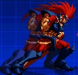 | 打撃無敵 Power>=500で、ＧＣ可 | |
| ・地上ふっとばし | (y+b or z) | 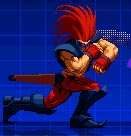 | Power>=500で、ＧＣ可 | |
| ・投げ | 接近して(F or B) + y | 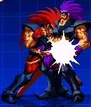 | 掴まれた瞬間に、yで投げ抜け可 | |
| ・MAX発動 | (KOF式)Power>=2000時に、 (y+a+b or z+c) (SVC式)Power>=3000で、自動発動 | 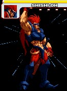 | config.txtで設定可。 モードによって、ゲージの減少スピードが 異なります。 | |
| ・ダウン回避 | ボタン２つ同時押し もしくは、 ダウンした瞬間にD | 打撃無敵 | ||
| ・アッパー | F+x | 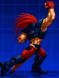 | 打ち上げ チョッピングライトからキャンセル可 | |
| ・チョッピングライト | F+a | 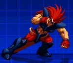 | 中段 アッパーからキャンセル可 | |
| 必殺技 | コマンド | 画像 | 備考 | |
| ・サイレントストーム | D,DF+F,P | 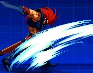 | 小と大で軌道が変化 | |
| ・ビーストブロー | D,DB,B+P | 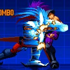 | 小と大で発生とダメージが変化 | |
| ・ナイトメア | D,DF,F+K | 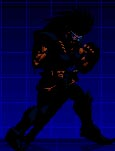 | 当身 小と大で受付時間が変化 | |
| ・アースチョッパー | F,D,DF+P | 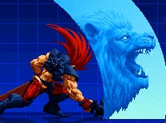 | 小と大で発生とダメージが変化 大はダウン追い討ち可 | |
| ・ゴッドブレス | D溜めU+P | 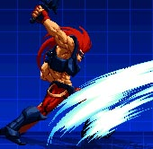 | 小と大で発生とダメージが変化 | |
| 超必殺技(Power>=1000) | コマンド | 画像 | 備考 | |
| ・キングストレート | F,D,B,F,x | 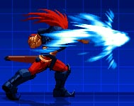 | ||
| ・キングストレート | F,D,B,F,y | 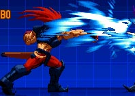 | 飛び道具 | |
| MAX超必殺技(Power>=2000) もしくは、MAX中 | コマンド | 画像 | 備考 | |
| ・未完成キングアッパー | F,D,B,F,(a+b or c) | 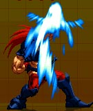 | 発生が遅い 空中ガード不可 | |
| ・ネオビーストブロー | D,F,D,F,(x+y or z) | 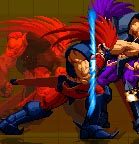 | 追い討ち可 |